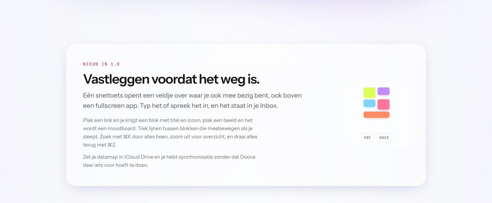
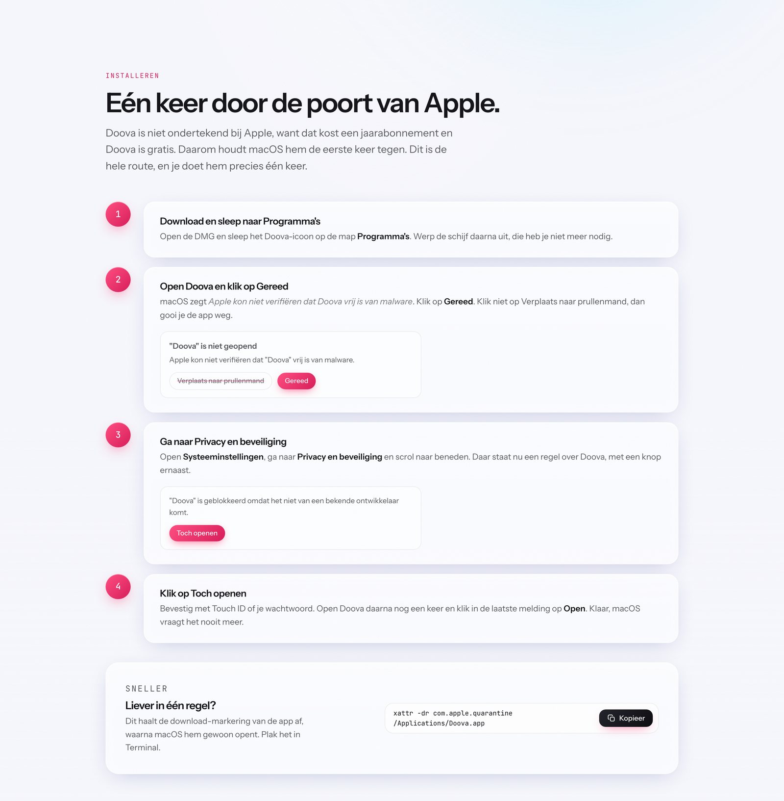
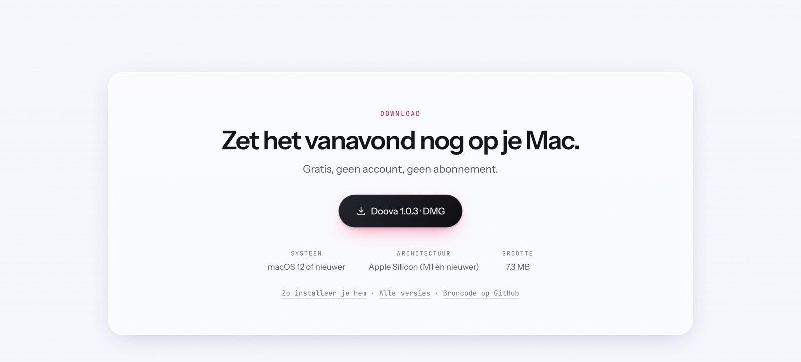
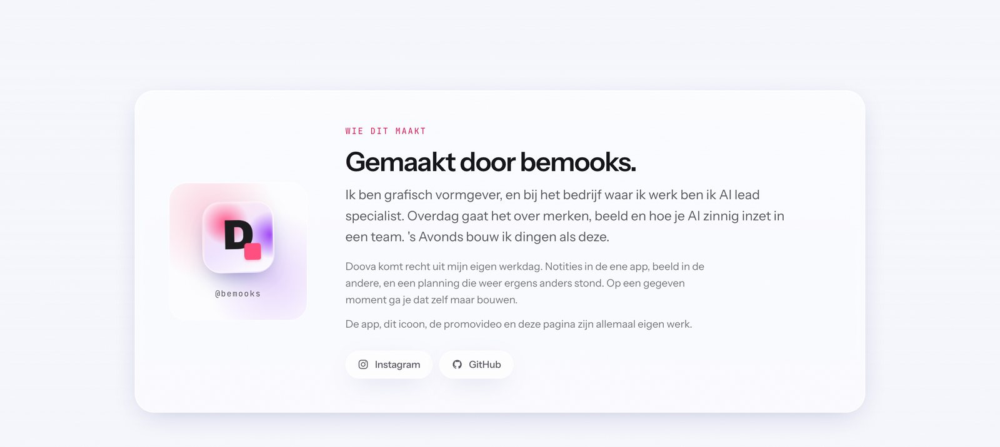

Brand Identity / Doova
Doova.
Doova is een gratis macOS-app die ik zelf bedacht en bouwde. Maar een app die niemand kent is alleen een map met code. Er moest een merk omheen dat in één blik duidelijk maakt wat het ding is en waarom je het zou vertrouwen. Deze pagina gaat over dat merk: de naam, het palet, de typografie, de toon, en de landingspagina die alles bij elkaar houdt.

Het uitgangspunt
De app zelf is bewust rustig. Licht, glazig, bijna onzichtbaar, want de inhoud van je blokken moet het werk doen en niet de interface eromheen. Dat is fijn om in te werken, maar het is een lastig vertrekpunt voor een merk, omdat rust op een landingspagina al snel leest als saai.
Daar is de hele identiteit uit ontstaan: fel buiten, rustig binnen. Om het product heen mag alles knallen in coral, paars en blauw, maar zodra je het appvenster in kijkt is het weer stil. Dat contrast doet twee dingen tegelijk. Het pakt je aandacht, en het laat meteen zien wat voor gevoel je krijgt als je de app opent. Er komt daarom ook nooit een merkkleur over de interface heen, want dan zou je die belofte breken op de plek waar je hem doet.
Doova
Kort, zacht, twee lettergrepen en in geen enkele taal beladen. Het betekent niets, en dat is precies de bedoeling: de app moet de naam betekenis geven, niet andersom. Het scheelde ook dat het domein nog vrij was.
Een D met een blokje
Het icoon is een zware D met een klein gekleurd vierkant ertegenaan. Dat blokje is letterlijk waar de app over gaat: iets dat je ergens neerlegt. Het werkt op zestien pixels in het Dock net zo goed als groot op een eindkaart.
Het blijft van jou
Geen account, geen cloud, geen tracking. Dat is niet alleen een functie maar het hele merkverhaal, dus het staat in de hero, in de functies en in de sectie onderaan. Drie keer dezelfde belofte, elke keer anders gezegd.
Palet en typografie
Vier kleuren op een gebroken wit dat net iets naar blauw trekt. Ze worden nooit als vlak gebruikt maar altijd als gradient die in elkaar overloopt, want een verloop voelt als beweging en de app draait om dingen die je verplaatst. Op de site keert datzelfde verloop terug achter het appvenster, in de promo's is het het volledige achtergrondveld.
De typografie is opzettelijk onopvallend. Instrument Sans voor alles wat je leest, JetBrains Mono voor labels, versienummers, bestandsgroottes en het terminalcommando. Die monospace is het enige plekje waar de site laat merken dat er een ontwikkelaar achter zit, en dat past bij de doelgroep. Het zwaarste wat er gebeurt is de kop in de hero, waar één woordgroep in kleur staat en de rest in ink.
De site, van boven naar beneden
doova.spaceDe volgorde van de pagina is de volgorde van de vragen die iemand stelt. Wat is het, is het nieuw, hoe ziet het eruit, wat kan het, hoe krijg ik het, en wie heeft dit gemaakt. Elke sectie beantwoordt er precies één, en geen enkele sectie vraagt iets terug voordat hij iets gegeven heeft.






De toon
Alles op de site staat in het Nederlands, want de app is Nederlands en de mensen voor wie hij bedoeld is ook. Geen enkele zin verkoopt iets. Er staat wat iets doet, en het volgende gaat over jou en niet over de app. Ik heb elke functietekst teruggeschreven tot hij hardop voorgelezen kon worden zonder dat het als reclame klonk.
Er staan geen uitroeptekens, geen woorden als revolutionair of naadloos, en geen beloftes over productiviteit. Wel staat er drie keer, in drie verschillende bewoordingen, dat je data van jou blijft. Dat is het enige waar de site echt zijn stem voor verheft.
Het merk in beweging
De twee promo's zijn de bewegende kant van hetzelfde merk. Ze zijn niet in een editor gemonteerd maar als HTML geschreven en uitgerenderd met de echte design-tokens van de app, zodat de interface die je ziet bewegen letterlijk dezelfde opmaak heeft als het product. De horizontale staat op de landingspagina, de verticale is de releasepromo voor social.
Doova, de rondleiding
Donker, traag en zonder woorden. Je ziet alleen handelingen, en elke beweging krijgt de tijd om af te maken.
Doova 1.0
Hier zie je het contrast het duidelijkst. Fel gradientveld eromheen, licht glas erbinnen.